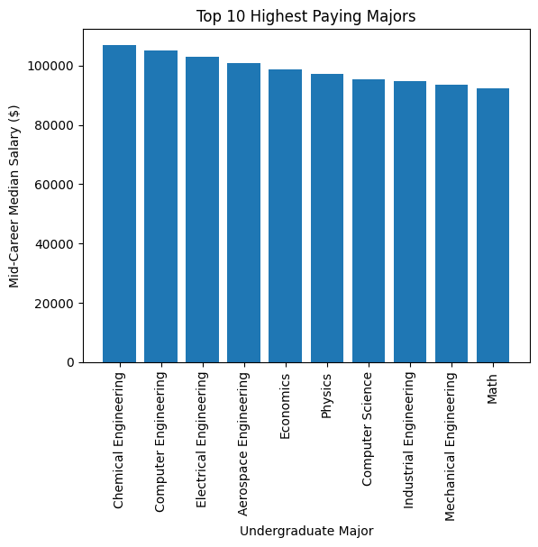
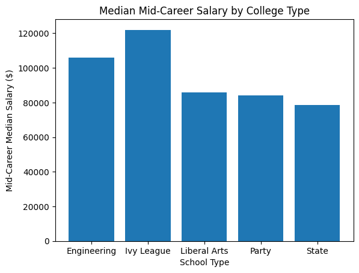

# load all necessary packages
import numpy as np
import pandas as pd
import matplotlib
from matplotlib import pyplot as plt
How Much Can You Expect to Earn After Graduation?
Introduction
The college application process can be a daunting yet exciting process. Throughout the process, applicants are researching schools to apply to and fields to major in. And once this is all finished, applicants must go through another process of deciding which school to commit to, which is not an easy decision to make. Throughout college as well, it is not uncommon for people to change majors, sometimes completely changing their career path or even transferring colleges. These changes are motivated by various reasons, some being salary, interest, or career opportunities.
As I am approaching the end of my senior year and about to graduate, this topic has been on my mind more frequently. I also find this to be a topic of discussion amongst most of my conversations. These are all factors that I considered when applying to college and am now considering while on the job hunt, so researching more about this can allow me to have more insight on my post-grad options and how much weight my college career has on my future.
This research will explore the various factors that affect salary after graduation. Some of these factors include college attended, major(s), and field(s) studied. This research will allow new graduates to have a better understanding of their post-grad future and how their salary can be affected by their college career and field of choice.
Methods
About the Data
Degrees that Pay Back (Degrees): This dataset provides information on the median pay of graduates from different colleges based on their degree type. The dataset includes information on the top 50 highest-paying degrees, as well as information on mid-career median pay, early career median pay, and the percent change in pay from early to mid-career. This data is based on survey data from Payscale, Inc. We will explore this dataset to observe the relationship between undergraduate major and salary.
Salaries by College Type (Salaries): This dataset provides information on the median pay of graduates from different college types, including engineering schools, Ivy League schools, liberal arts schools, party schools, and state schools. The dataset includes information on early and mid-career median pay, as well as the mid-career 10th and 90th percentile pay for each college type.
Salaries by Region (Region): This dataset provides information on the median pay of graduates in different regions of the United States (California, Midwestern, Northeastern, Southern, Western). The dataset includes information on early and mid-career median pay, as well as the mid-career 10th and 90th percentile pay for each region.
Data Cleaning and Processing
During this step, the data is cleaned and process for the proceeding analysis stage. The data was not easily usable and not in the right format to be used. For example, all the numbers needed to be converted to be of type numeric.
degrees = pd.read_csv('degrees-that-pay-back.csv')
salaries = pd.read_csv('salaries-by-college-type.csv')
region = pd.read_csv('salaries-by-region.csv')
# Convert columns to numeric and remove unnecessary symbols ($)
degrees['Starting Median Salary'] = degrees['Starting Median Salary'].str.replace(',', '').astype(float)
degrees['Mid-Career Median Salary'] = degrees['Mid-Career Median Salary'].str.replace(',', '').astype(float)
degrees['Mid-Career 10th Percentile Salary'] = degrees['Mid-Career 10th Percentile Salary'].str.replace(',', '').astype(float)
degrees['Mid-Career 25th Percentile Salary'] = degrees['Mid-Career 25th Percentile Salary'].str.replace(',', '').astype(float)
degrees['Mid-Career 75th Percentile Salary'] = degrees['Mid-Career 75th Percentile Salary'].str.replace(',', '').astype(float)
degrees['Mid-Career 90th Percentile Salary'] = degrees['Mid-Career 90th Percentile Salary'].str.replace(',', '').astype(float)
salaries['Starting Median Salary'] = salaries['Starting Median Salary'].str.replace(',', '').astype(float)
salaries['Mid-Career Median Salary'] = salaries['Mid-Career Median Salary'].str.replace(',', '').astype(float)
salaries['Mid-Career 10th Percentile Salary'] = salaries['Mid-Career 10th Percentile Salary'].str.replace(',', '').astype(float)
salaries['Mid-Career 25th Percentile Salary'] = salaries['Mid-Career 25th Percentile Salary'].str.replace(',', '').astype(float)
salaries['Mid-Career 75th Percentile Salary'] = salaries['Mid-Career 75th Percentile Salary'].str.replace(',', '').astype(float)
salaries['Mid-Career 90th Percentile Salary'] = salaries['Mid-Career 90th Percentile Salary'].str.replace(',', '').astype(float)
region['Starting Median Salary'] = region['Starting Median Salary'].str.replace(',', '').astype(float)
region['Mid-Career Median Salary'] = region['Mid-Career Median Salary'].str.replace(',', '').astype(float)
region['Mid-Career 10th Percentile Salary'] = region['Mid-Career 10th Percentile Salary'].str.replace(',', '').astype(float)
region['Mid-Career 25th Percentile Salary'] = region['Mid-Career 25th Percentile Salary'].str.replace(',', '').astype(float)
region['Mid-Career 75th Percentile Salary'] = region['Mid-Career 75th Percentile Salary'].str.replace(',', '').astype(float)
region['Mid-Career 90th Percentile Salary'] = region['Mid-Career 90th Percentile Salary'].str.replace(',', '').astype(float)
cols_to_convert = ['Starting Median Salary', 'Mid-Career Median Salary', 'Mid-Career 10th Percentile Salary',
'Mid-Career 25th Percentile Salary', 'Mid-Career 75th Percentile Salary', 'Mid-Career 90th Percentile Salary']
degrees[cols_to_convert] = degrees[cols_to_convert].apply(pd.to_numeric)
salaries[cols_to_convert] = salaries[cols_to_convert].apply(pd.to_numeric)
region[cols_to_convert] = region[cols_to_convert].apply(pd.to_numeric)After cleaning the data, we can preview the datasets that we will be working with. We also calculated a table of summary statistics.
Dataset #1 - Degrees
degrees.head()| Undergraduate Major | Starting Median Salary | Mid-Career Median Salary | Percent change from Starting to Mid-Career Salary | Mid-Career 10th Percentile Salary | Mid-Career 25th Percentile Salary | Mid-Career 75th Percentile Salary | Mid-Career 90th Percentile Salary | |
|---|---|---|---|---|---|---|---|---|
| 0 | Accounting | 46000.0 | 77100.0 | 67.6 | 42200.0 | 56100.0 | 108000.0 | 152000.0 |
| 1 | Aerospace Engineering | 57700.0 | 101000.0 | 75.0 | 64300.0 | 82100.0 | 127000.0 | 161000.0 |
| 2 | Agriculture | 42600.0 | 71900.0 | 68.8 | 36300.0 | 52100.0 | 96300.0 | 150000.0 |
| 3 | Anthropology | 36800.0 | 61500.0 | 67.1 | 33800.0 | 45500.0 | 89300.0 | 138000.0 |
| 4 | Architecture | 41600.0 | 76800.0 | 84.6 | 50600.0 | 62200.0 | 97000.0 | 136000.0 |
degrees.describe()| Starting Median Salary | Mid-Career Median Salary | Percent change from Starting to Mid-Career Salary | Mid-Career 10th Percentile Salary | Mid-Career 25th Percentile Salary | Mid-Career 75th Percentile Salary | Mid-Career 90th Percentile Salary | |
|---|---|---|---|---|---|---|---|
| count | 50.000000 | 50.00000 | 50.000000 | 50.000000 | 50.000000 | 50.000000 | 50.000000 |
| mean | 44310.000000 | 74786.00000 | 69.274000 | 43408.000000 | 55988.000000 | 102138.000000 | 142766.000000 |
| std | 9360.866217 | 16088.40386 | 17.909908 | 12000.779567 | 13936.951911 | 20636.789914 | 27851.249267 |
| min | 34000.000000 | 52000.00000 | 23.400000 | 26700.000000 | 36500.000000 | 70500.000000 | 96400.000000 |
| 25% | 37050.000000 | 60825.00000 | 59.125000 | 34825.000000 | 44975.000000 | 83275.000000 | 124250.000000 |
| 50% | 40850.000000 | 72000.00000 | 67.800000 | 39400.000000 | 52450.000000 | 99400.000000 | 145500.000000 |
| 75% | 49875.000000 | 88750.00000 | 82.425000 | 49850.000000 | 63700.000000 | 118750.000000 | 161750.000000 |
| max | 74300.000000 | 107000.00000 | 103.500000 | 71900.000000 | 87300.000000 | 145000.000000 | 210000.000000 |
Dataset #2 - Salaries
salaries.head()| School Name | School Type | Starting Median Salary | Mid-Career Median Salary | Mid-Career 10th Percentile Salary | Mid-Career 25th Percentile Salary | Mid-Career 75th Percentile Salary | Mid-Career 90th Percentile Salary | |
|---|---|---|---|---|---|---|---|---|
| 0 | Massachusetts Institute of Technology (MIT) | Engineering | 72200.0 | 126000.0 | 76800.0 | 99200.0 | 168000.0 | 220000.0 |
| 1 | California Institute of Technology (CIT) | Engineering | 75500.0 | 123000.0 | NaN | 104000.0 | 161000.0 | NaN |
| 2 | Harvey Mudd College | Engineering | 71800.0 | 122000.0 | NaN | 96000.0 | 180000.0 | NaN |
| 3 | Polytechnic University of New York, Brooklyn | Engineering | 62400.0 | 114000.0 | 66800.0 | 94300.0 | 143000.0 | 190000.0 |
| 4 | Cooper Union | Engineering | 62200.0 | 114000.0 | NaN | 80200.0 | 142000.0 | NaN |
salaries.describe()| Starting Median Salary | Mid-Career Median Salary | Mid-Career 10th Percentile Salary | Mid-Career 25th Percentile Salary | Mid-Career 75th Percentile Salary | Mid-Career 90th Percentile Salary | |
|---|---|---|---|---|---|---|
| count | 269.000000 | 269.000000 | 231.000000 | 269.000000 | 269.000000 | 231.000000 |
| mean | 46068.401487 | 83932.342007 | 44250.649351 | 60373.234201 | 116275.092937 | 157705.627706 |
| std | 6412.616242 | 14336.191107 | 8719.612427 | 11381.348857 | 22952.334054 | 34823.348157 |
| min | 34800.000000 | 43900.000000 | 22600.000000 | 31800.000000 | 60900.000000 | 87600.000000 |
| 25% | 42000.000000 | 74000.000000 | 39000.000000 | 53200.000000 | 100000.000000 | 136000.000000 |
| 50% | 44700.000000 | 81600.000000 | 43100.000000 | 58400.000000 | 113000.000000 | 153000.000000 |
| 75% | 48300.000000 | 92200.000000 | 47400.000000 | 65100.000000 | 126000.000000 | 170500.000000 |
| max | 75500.000000 | 134000.000000 | 80000.000000 | 104000.000000 | 234000.000000 | 326000.000000 |
Dataset #3 - Region
region.head()| School Name | Region | Starting Median Salary | Mid-Career Median Salary | Mid-Career 10th Percentile Salary | Mid-Career 25th Percentile Salary | Mid-Career 75th Percentile Salary | Mid-Career 90th Percentile Salary | |
|---|---|---|---|---|---|---|---|---|
| 0 | Stanford University | California | 70400.0 | 129000.0 | 68400.0 | 93100.0 | 184000.0 | 257000.0 |
| 1 | California Institute of Technology (CIT) | California | 75500.0 | 123000.0 | NaN | 104000.0 | 161000.0 | NaN |
| 2 | Harvey Mudd College | California | 71800.0 | 122000.0 | NaN | 96000.0 | 180000.0 | NaN |
| 3 | University of California, Berkeley | California | 59900.0 | 112000.0 | 59500.0 | 81000.0 | 149000.0 | 201000.0 |
| 4 | Occidental College | California | 51900.0 | 105000.0 | NaN | 54800.0 | 157000.0 | NaN |
region.describe()| Starting Median Salary | Mid-Career Median Salary | Mid-Career 10th Percentile Salary | Mid-Career 25th Percentile Salary | Mid-Career 75th Percentile Salary | Mid-Career 90th Percentile Salary | |
|---|---|---|---|---|---|---|
| count | 320.000000 | 320.000000 | 273.000000 | 320.000000 | 320.000000 | 273.000000 |
| mean | 46253.437500 | 83934.375000 | 45253.113553 | 60614.062500 | 116496.875000 | 160442.124542 |
| std | 6617.038001 | 15191.443091 | 8562.834333 | 11786.436432 | 24104.265214 | 36785.768186 |
| min | 34500.000000 | 43900.000000 | 25600.000000 | 31800.000000 | 60900.000000 | 85700.000000 |
| 25% | 42000.000000 | 73725.000000 | 39500.000000 | 53100.000000 | 99825.000000 | 136000.000000 |
| 50% | 45100.000000 | 82700.000000 | 43700.000000 | 59400.000000 | 113000.000000 | 154000.000000 |
| 75% | 48900.000000 | 93250.000000 | 48900.000000 | 66025.000000 | 129000.000000 | 178000.000000 |
| max | 75500.000000 | 134000.000000 | 80000.000000 | 104000.000000 | 234000.000000 | 326000.000000 |
Exploratory Data Analysis
We begin by conducting exploratory data analysis to answer our research question. Specifically, in this process, we are interested in learning about general salary statistics and which majors and types of schools will lead to higher salaries.
Please note that all datasets had information on median salary, so we are only exploring median salary from the Salaries dataset. We will further analyze both in the later parts of the project.
# Overall starting median salary
salaries['Starting Median Salary'].mean()46068.40148698885From the plot below, we can see that the median starting salary is right-skewed, with most starting median salaries being around \$40000 - \$45,000.
plt.hist(salaries['Starting Median Salary'])
plt.xlabel('Salary ($)')
plt.ylabel('Frequency')
plt.title('Starting Median Salary (by Degree)')Text(0.5, 1.0, 'Starting Median Salary (by Degree)')Now we can explore the mid-career median salary to see the shift from the starting median salary.
# Overall mid-career median salary
salaries['Mid-Career Median Salary'].mean()83932.34200743494Typically, the median salary shifts later in the career. From this Mid-Career Median Salary graph, we can see that the salary has shifted to be around \$80,000, which is almost double what is shown in the Starting Median Salary graph (above). The mean has also increased by about \$37,000.
plt.hist(salaries['Mid-Career Median Salary'])
plt.xlabel('Salary ($)')
plt.ylabel('Frequency')
plt.title('Mid-Career Median Salary (by Degree)')Text(0.5, 1.0, 'Mid-Career Median Salary (by Degree)')Additionally, we can explore the impact of a college’s region on salary. According to the graph, schools in California and Northeastern have a higher starting median salary.
# Group the data by region type and calculate the median starting salary
grouped_region = region.groupby('Region')['Starting Median Salary'].median().reset_index()
# Create a bar plot
plt.bar(grouped_region['Region'], grouped_region['Starting Median Salary'])
plt.xlabel('School Type')
plt.ylabel('Starting Median Salary ($)')
plt.title('Median Starting Salary by College Type')
plt.show()Lastly, as part of our exploratory data analysis, we explore the relationship between starting and mid-career median salaries by major. There is a linear relationship between these two variables; with a higher starting median salary, the mid-career median salary also usually ends up being higher.
plt.scatter(degrees['Starting Median Salary'], degrees['Mid-Career Median Salary'])
plt.xlabel('Starting Median Salary ($)')
plt.ylabel('Mid-Career Median Salary ($)')
plt.title('Starting vs. Mid-Career Salaries')
# Set x-axis tick values
plt.xticks(range(40000, 120000, 20000))
# Set y-axis tick values
plt.yticks(range(50000, 160000, 20000))
plt.show()
Analysis
After conducting introductory analysis, we have a better idea of our data and now we can use this information to dive deeper into our datasets to answer our research question.
First, we further explore the progression from starting to mid-career median salary. In general, we can see that mid-career salaries are much higher than starting salaries. While this doesn’t fully answer our research question of factors that affect salary, having knowledge of this general increase allows us to know that our starting salary is not fixed for the rest of our careers. In fact, most salaries doubled over time, as shown by the plot below.
# create a figure and axis
fig, ax = plt.subplots()
# plot the histograms with transparency to show overlaps
ax.hist(salaries['Starting Median Salary'], bins=30, alpha=0.5, label='Starting Median Salary')
ax.hist(salaries['Mid-Career Median Salary'], bins=30, alpha=0.5, label='Mid-Career Median Salary')
# set labels and title
ax.set_xlabel('Salary ($)')
ax.set_ylabel('')
ax.set_title('Starting vs. Mid-Career Salaries')
# add legend
ax.legend()
# show the plot
plt.show()
To further explore the relationship between major studied and salary, we can identify the top ten earning majors according to their mid-career median salaries.
top_majors = degrees.sort_values(by='Mid-Career Median Salary', ascending=False).head(10)
print(top_majors['Undergraduate Major'])8 Chemical Engineering
12 Computer Engineering
19 Electrical Engineering
1 Aerospace Engineering
17 Economics
44 Physics
13 Computer Science
30 Industrial Engineering
38 Mechanical Engineering
37 Math
Name: Undergraduate Major, dtype: objecttop_majors = degrees.sort_values(by='Mid-Career Median Salary', ascending=False).head(10)
plt.bar(top_majors['Undergraduate Major'], top_majors['Mid-Career Median Salary'])
plt.xticks(rotation=90)
plt.xlabel('Undergraduate Major')
plt.ylabel('Mid-Career Median Salary ($)')
plt.title('Top 10 Highest Paying Majors')
plt.show()From this graph, we can see that Chemical Engineering, Computer Engineering, and Electrical Engineering have the highest mid-career median salaries, all totaling over \$100,000.
While major plays an important role in determining career salary, we can further explore to see if salary is affected by other factors, such as the type of school attended. From the graph below, we can see that students that attended engineering or ivy league schools typically earned higher median mid-career salaries after graduation.
# Group the data by college type and calculate the median starting salary
grouped_salaries = salaries.groupby('School Type')['Mid-Career Median Salary'].median().reset_index()
# Create a bar plot
plt.bar(grouped_salaries['School Type'], grouped_salaries['Mid-Career Median Salary'])
plt.xlabel('School Type')
plt.ylabel('Mid-Career Median Salary ($)')
plt.title('Median Mid-Career Salary by College Type')
plt.show()Results
After conducting more data analysis, we have a better understanding of the factors that may potentially affect salary after graduation. Particularly, we studied the three factors: region, college type, and major.
Salary by Region
When examining the region factor, we can see that the location the college is situated in does not have as significant of an impact on salary. From observing the double bar graph below, it is shown that schools in California and Northeastern regions typically have higher starting and mid-career median salaries, however, this is a small difference and not too significant. We can also note that there is no significant difference in region when comparing starting and mid-career salaries. Salary growth is also consistent across the regions; if a region has a higher starting salary, it typically has a higher mid-career salary as well.
salaries_by_region = region.groupby('Region')[['Starting Median Salary', 'Mid-Career Median Salary']].median()
# create a bar chart to compare salaries by region
salaries_by_region.plot(kind='bar', rot=0)
# customize the plot
plt.xlabel('Region')
plt.ylabel('Median Salary ($)')
plt.title('Median Starting and Mid-Career Salaries by Region')
plt.legend(loc='upper right', bbox_to_anchor=(1.5,1))
plt.show()Salary by School Type
When examining the school type factor, we can see that school type does indeed have an effect on salary. According to the side-by-side box plots below, Ivy League and Engineering schools typically have higher mid-career median salaries, with both types yielding median salaries over \$100,000. On the other hand, State schools typically have lower mid-career median salaries, around high \$70,000s. This suggests that the choice of college type may have a significant impact on one’s earning potential. However, it is also important to know that while the differences are quite clear, it is still possible to have a high salary at a school that is not an ivy-league or engineering focused. For example, when looking at the box plot for State schools, there are outliers, which suggests it is still possible to have a higher earning salary at other types of schools.
mid_career_salaries = salaries[['School Type', 'Mid-Career Median Salary']]
# create a dictionary to map school types to colors
colors = {'Engineering': 'red', 'Liberal Arts': 'blue', 'Party': 'green', 'State': 'orange', 'Ivy League': 'purple'}
# create the side-by-side boxplot
fig, ax = plt.subplots()
mid_career_salaries.boxplot(by='School Type', ax=ax, vert=False, grid=False, widths=0.6, patch_artist=True)
# customize the plot
for i, box in enumerate(ax.artists):
box.set_facecolor(colors[list(colors.keys())[i]])
ax.set_xlabel('Mid-Career Median Salary')
ax.set_ylabel('School Type')
ax.set_title('Mid-Career Median Salaries by School Type')
# show the plot
plt.show()Salary by Degree
To examine the degree factor, we create a scatter plot that compares all mid-career salaries (10th pct., 25th pct., median, 75th pct., 90th) by major. From the plot below, we see that degrees in STEM fields tend to have the highest median pay, both in early and mid-career. For example, the top ten highest-paying degrees according to the dataset are all in STEM fields. This suggests that choosing a major in a STEM field may increase one’s chances of having a higher salary later in life. Additionally, we see that some degrees, such as those in education and religion, tend to have lower median pay, even in mid-career. This suggests that the choice of degree may have a significant impact on one’s earning potential.
degrees2 = degrees.reset_index().sort_values(by = 'Mid-Career Median Salary', ascending = True)
degrees2 = degrees2.reset_index()
fig = plt.figure(figsize=(8,12))
matplotlib.rc('grid', alpha = .5, color = '#e3dfdf')
matplotlib.rc('axes', edgecolor = 'darkgrey')
x = degrees2['Starting Median Salary']
y = degrees2.index
labels = degrees2['Undergraduate Major']
plt.yticks(y, labels)
x1 = degrees2['Mid-Career 10th Percentile Salary']
plt.scatter(x1, y, color='#dc8580', label = '10th pct. Mid-Career Salary')
x2 = degrees2['Mid-Career 25th Percentile Salary']
plt.scatter(x2, y, color='#f2e6b1', label = '25th pct. Mid-Career Salary')
x3 = degrees2['Mid-Career Median Salary']
plt.scatter(x3, y, color='#95dab6', label = 'Median Mid-Career Salary')
x4 = degrees2['Mid-Career 75th Percentile Salary']
plt.scatter(x4, y, color='#83b2d0', label = '75th pct. Mid-Career Salary')
x5 = degrees2['Mid-Career 90th Percentile Salary']
plt.scatter(x5, y, color='#7f87b2', label = '90th pct. Mid-Career Salary')
plt.xlabel('Annual Salary ($)')
plt.ylabel('Major')
plt.title('Median Salaries by Major')
plt.legend(loc='upper right', bbox_to_anchor=(1.5,1))
plt.grid(True)
plt.show()
Discussion
Based on the analysis of the three datasets, it is clear that factors such as degree type, college type, and geographic location may have a significant impact on one’s earning potential. According to the data, choosing a major in a STEM field, attending an engineering or Ivy League school, and living in California or the Northeast regions may increase one’s chances of having a higher salary later in life. However, it is important to note that there are many other factors that may also affect one’s earning potential, such as work experience, industry, and job title. Nonetheless, the data provides valuable insights into the factors that affect salaries, and may help guide individuals in making decisions about their education and career paths.
While higher education has been associated with higher lifetime earnings, the specific factors that affect salaries can vary significantly. Therefore, individuals should carefully consider their degree and college choices, as well as their geographic location, when planning their education and career paths.
It is important to note that the datasets used in this analysis have limitations. For example, the datasets only provide information on median pay and do not account for variations in pay within industries or job titles. Additionally, the datasets do not account for factors such as work experience, or roles, which can also have a significant impact on one’s earning potential. If given additional time, I would look for more datasets that have this information and would allow me to conduct a more extensive analysis.
Overall, this research provides valuable insights into the factors that affect salaries. After the analysis we have conducted, it is possible to say that the factors, region, school type, and degree, can affect salary. However, individuals should also consider additional factors, such as work experience and industry, when making decisions about their education and career paths. To tie in this research with today’s economy, it is also important to consider how resistant the job can be during economic crises, like a recession. It is possible that a job may have a higher earning salary but not be the most resistant during a recession and thus cause additional financial burdens on the professional during this unforunate time. By carefully considering these factors, individuals can increase their chances of achieving their desired salary and career goals.